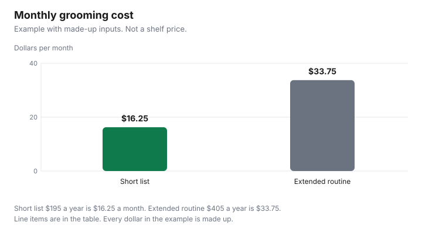

Personal Care · Canada
Men's Grooming on a Budget: The Short List That Covers Most Needs
Men’s grooming on a budget in Canada covers six items: cleanser, moisturiser, sunscreen, a razor or trimmer, deodorant and nail care. In a made-up example, that short list cost $195 a year, against $405 for an extended routine. Men’s grooming is a short list with a long shelf of extras. The extras are where a label that says “for men” picks up a price that the ingredient list did not earn. This page prices six rows a household can actually use: cleanser, moisturiser, sunscreen, a razor or a trimmer, deodorant, and nail care. It does not rank a product, a banner, or a beard. The monthly totals are an example with made-up inputs. A haircut is not in the total. It is on the haircut guide.
Key takeaways
- The short list is cleanser, moisturiser, sunscreen, a razor or trimmer, deodorant, and nail care. Anything else has to beat that total.
- Example with made-up inputs: the short list is $195 a year, or $16.25 a month. An extended routine at $405 a year is $33.75 a month.
- Sunscreen is a DIN or NPN product with an expiry date. Health Canada’s advice is broad-spectrum SPF 30 or higher, including cloudy days and winter. It is not written as a rule for men only.
- A men’s label is a price-per-100 mL question. No survey of a “men’s tax” is cited here.
- Heading 85.10 (shavers, hair clippers and hair-removing appliances) is not in the surtax order checked 29 Sep 2026. How a specific trimmer is classified: check with CBSA (1-800-461-9999) or your carrier.
Core kit
Six rows cover the bathroom most of the time. A cleanser washes the face.
A moisturiser is what you put on after, if your skin wants it. Sunscreen is the ultraviolet step, and it is a drug or a natural health product in Canada, not a scented gel with a sport font. A razor or a trimmer handles the hair you want gone or shaped. Deodorant or antiperspirant is its own cost-per-day problem. Nail care is a clipper you can keep for years, not a monthly subscription. If you do not shave and you do not grow a beard you trim, the razor row is zero. If you do not use moisturiser, that row is zero. The list is short on purpose. Add a row only when you will use it for a month, then put it in the annual total.
Write the price you pay and how long the package lasts. A cleanser at a made-up $24 a year is $2 a month. That is a different fact from a cleanser at $24 a bottle if the bottle lasts two years or two months. The table uses a year as the common denominator so a trimmer and a stick of deodorant can sit on the same line. The three-step routine is the face half of this list for anyone, not a men’s plan. Use it. Do not buy a second cleanser because the first one was not in a black bottle.
| Row | What it is for | Where to save |
|---|---|---|
| Cleanser | Wash the face | Price per 100 mL, a size you will finish, store brand if the ingredient list is one you accept |
| Moisturiser | After washing, if you use one | Same division. A men’s label is not an ingredient |
| Sunscreen | UV protection. Broad-spectrum SPF 30 or higher on Health Canada’s page | DIN or NPN, expiry date, then price per mL. See the sunscreen guide |
| Razor or trimmer | Hair you choose to remove or shape | Per shave for blades. Price ÷ years for a device you keep |
| Deodorant | The cost-per-day guide | Days a stick lasts. Look up a DIN or NPN if one is printed |
| Nail care | Clippers, used for years | Do not replace a working clipper on a schedule. No price is cited here |
Shaving vs trimming
A cartridge razor is a repeating purchase. The cost per shave, the handle, and the subscription traps are on the razor guide.
This page does not rebuild that arithmetic. It only needs a yearly figure you can drop into the short list. In the example with made-up inputs, cartridges are $36 a year. That number is made up. Use the figure from your own blade count.
A trimmer is closer to a small appliance. Divide the price by the years you expect to keep a working device, and add any replacement blade you actually buy. A made-up $40 trimmer kept four years is $10 a year. Substituting that $10 for the $36 cartridge line would drop the short-list example from $195 to $169 a year, which is $14.08 a month instead of $16.25. The chart does not show that swap. It shows the cartridge version. Pick the tool for the hair you want, then put the real annual figure in the worksheet. If you are importing a device marked as a good of the United States, classification matters. Heading 85.10 of the 2026 Customs Tariff covers shavers, hair clippers and hair-removing appliances with a self-contained electric motor, and no 85.10 item appears in the United States Surtax Order (2026), checked 29 Sep 2026. How a given trimmer is classified: check with CBSA (1-800-461-9999) or your carrier.
Skin basics: cleanser, moisturiser, SPF
Three steps, then stop, unless a clinician has told you otherwise. Health Canada’s sunscreens page says to use a broad-spectrum sunscreen with an SPF of 30 or higher, to apply it generously, and to reapply at least every two hours while you are exposed, and after swimming, sweating, or towelling off.
Protect skin on cloudy days and in winter. Snow reflects UV. The page’s amount example for an adult is about 7 teaspoons (35 mL) for exposed skin, of which about one teaspoon is for the face and neck. Dividing 35 mL by seven is 5 mL for that face-and-neck teaspoon. A beard, a hat, and a collar change how much skin is exposed. Do not treat 5 mL as a personal prescription. An approved sunscreen has a DIN or an NPN, and all sunscreens have expiry dates. The sunscreen guide is the price-per-millilitre work. An expired bottle is not a saving.
Cleanser and moisturiser are cosmetics unless the claims or the ingredients make them a drug or a natural health product. Read the INCI list. A store brand is a reasonable test on a size you will finish, which is the method on the store-brand guide. “For men” on the front is not an active ingredient. If your skin reacts, stop. Ask a pharmacist. This is not medical advice, and it is not a routine of serums.
Store-brand swaps
Swap where the comparison is size and ingredients: cleanser, moisturiser, a basic deodorant you have already tested for a month. Do not swap sunscreen by sticker alone.
Match the DIN or NPN habits first, then the price per mL, then the expiry date. Do not swap a razor by the colour of the handle. Blade fit is the razor guide’s problem. Example with made-up inputs: a 100 mL moisturiser in men’s packaging at $16 is $16 per 100 mL. An unlabelled 100 mL at $9 is $9 per 100 mL. The $7 gap is the example’s price of the label, if you would have used either formula. If one of them has an ingredient you need and the other does not, there is no swap. There are two products.
Buy the smaller size until you know you will finish the larger one. A club bottle of a scent you are testing is how a store brand stops being cheap. The deodorant guide’s multipack warning is the same warning. One stick, then a bundle.
Annual cost
Add a year, not a basket of stickers. Example with made-up inputs.
Short list: cleanser $24, moisturiser $36, sunscreen $48, cartridges $36, deodorant $39, nail care $12. The sum is $195 a year, which is $195 ÷ 12, or $16.25 a month. Extended routine, same short list plus a serum at $96, a beard oil at $48, a fragrance at $36, and a second cleanser at $30. Those extras are $210. The extended total is $405 a year, or $33.75 a month. The gap is $17.50 a month inside the example. None of those prices was on a shelf on 29 Sep 2026. Cross out every row you do not use. A man who skips moisturiser and fragrance is not “failing” the extended column. He is refusing to fund it.
Keep the worksheet for a year and look at it when a display suggests a seventh step. If the new product does not replace a row, it adds to $195. If it replaces a row, subtract the old row first. A haircut, a barber-school clinic, or a colour appointment is not a grooming-aisle row. Leave it on the haircut and colour guides so it is not hidden inside a bottle of tonic. Amazon.ca storefronts can be where a clipper or a bottle is sold. That is the offer type in the disclosure. It is not a short list, and it is not a partner.
| Row | Short list, per year | Extended, per year |
|---|---|---|
| Cleanser | $24 | $24, plus a second cleanser at $30 |
| Moisturiser | $36 | $36 |
| Sunscreen | $48 | $48 |
| Cartridges | $36 | $36 |
| Deodorant | $39 | $39 |
| Nail care | $12 | $12 |
| Serum, beard oil, fragrance | $0 | $96 + $48 + $36 = $180 |
| Year | $195 | $405 |
| Month | $16.25 | $33.75 |

Sources & date stamps
- Health Canada, Sunscreens, checked 29 Sep 2026. Broad-spectrum SPF 30 or higher. Reapply at least every 2 hours. Cloudy days and winter. About 7 teaspoons (35 mL) for an adult, about one teaspoon for the face and neck. DIN or NPN. Expiry dates on all sunscreens.
- Health Canada, Labelling of cosmetics, and What is a cosmetic?, checked 29 Sep 2026. Metric size and ingredient list. Deodorant is named as a grooming aid unless the product is classified as a drug or a natural health product.
- United States Surtax Order (2026), SOR/2026-186, checked 29 Sep 2026. Current to 2026-09-21, last amended on 2026-09-08, in force 8 Sep 2026. No heading 85.10 item appears. Classification of a specific trimmer: check with CBSA (1-800-461-9999) or your carrier.
- Every dollar in the short list and the extended routine is an example with made-up inputs. This guide quotes no grooming shelf price.
Frequently asked questions
What grooming products do men actually need?
Need is a short list you will use: a cleanser, a moisturiser, a sunscreen with a DIN or an NPN, a way to shave or trim, a deodorant or antiperspirant, and something for nails. This page does not cite a medical standard that says every man needs each row. It prices the rows so an extra serum has to earn a place. The dollars in the chart are an example with made-up inputs, not a budget you must hit.
Is men's-branded product more expensive?
This guide does not cite a survey that says it is, so compare price per 100 mL on two packages with ingredient lists you are willing to use. In the example with made-up inputs, a 100 mL moisturiser labelled for men at $16 is $16 per 100 mL and an unlabelled 100 mL at $9 is $9 per 100 mL, a $7 gap inside the example. If the formulas differ in an ingredient you chose on purpose, they are not the same product.
Beard trimmer or razor?
A razor’s cost belongs on the per-shave guide, because blades are the repeating bill, while a trimmer is a device you divide by the years you expect to keep it. In a side example, a made-up $40 trimmer kept four years is $10 a year, against a made-up $36 a year of cartridges in the short-list table. If you are unsure how a device is classified, check with CBSA (1-800-461-9999) or your carrier, and do not treat that call as a reason to pick a razor. Comfort and the hair you want to keep decide the tool.
Do men need sunscreen every day?
Health Canada’s sunscreens page does not split that advice by sex. It says to use a broad-spectrum sunscreen with an SPF of 30 or higher, to protect skin on cloudy days and in winter because snow reflects UV, and it says approved sunscreens have a DIN or an NPN and an expiry date. A personal plan for your skin is a conversation with a clinician. This is not medical advice.
How can I cut grooming costs?
Drop the steps you do not use, switch a test row to a store brand on a size you will finish, and price sunscreen and deodorant by use rather than by the men’s label. Keep the short-list total for a year and make an extra product beat it. A haircut is a separate bill, on the haircut guide. A multipack of a scent you have not worn for a month is inventory, not a saving.
Researched and drafted with AI assistance and fact-checked against official Canadian sources. How we create content.
Disclosure: Grooming supplies sold through Amazon.ca storefronts are an offer type. Saving Optimizer may earn a commission if a partner link is added later. No partnership is claimed with Amazon or any brand. A storefront does not choose the short list. Education only. This is not medical advice.